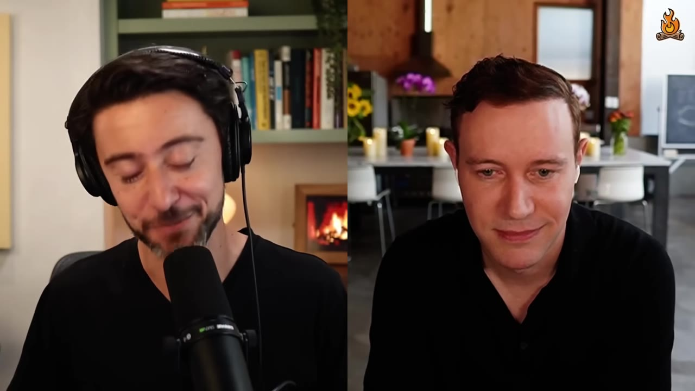
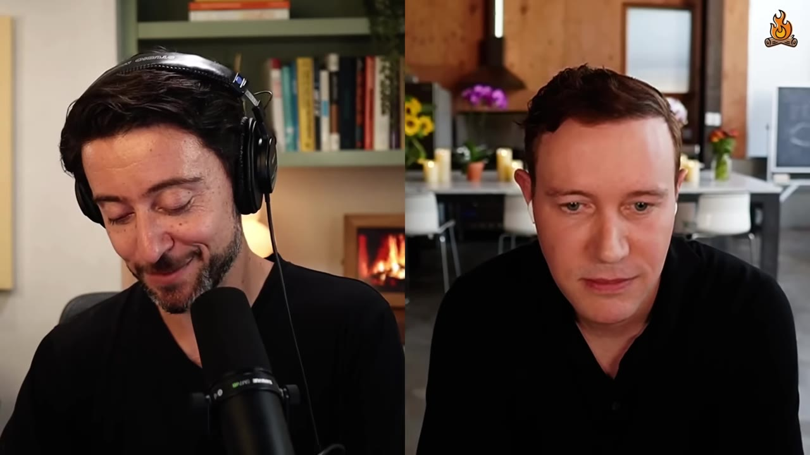
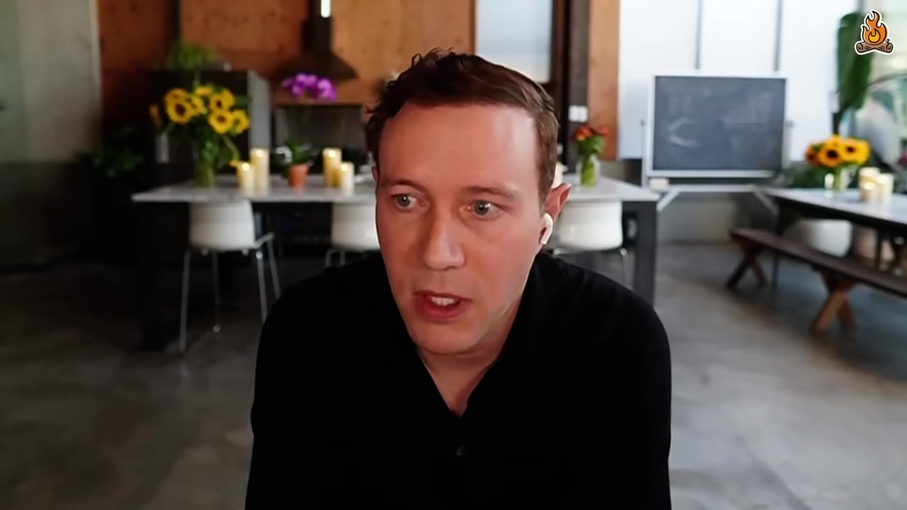
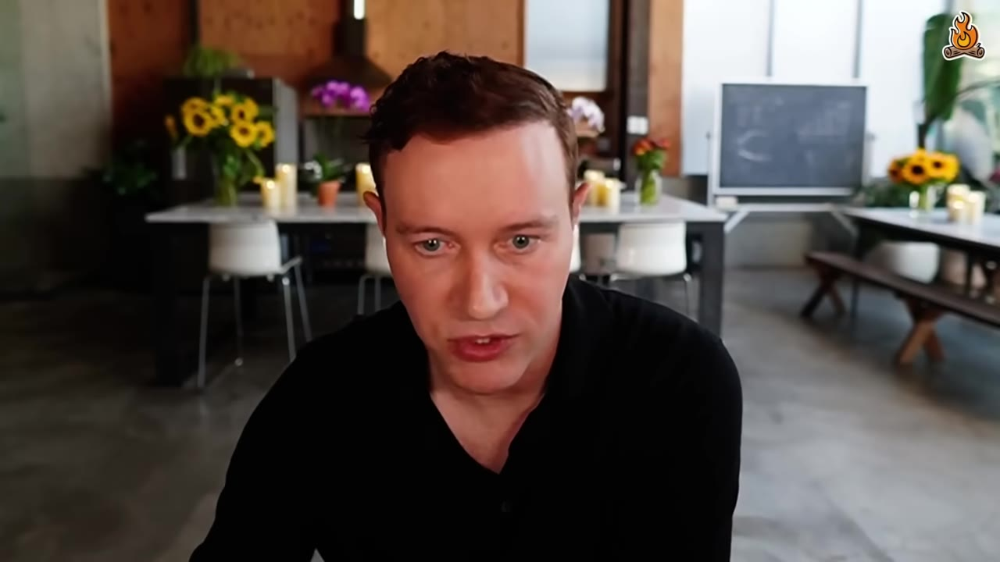
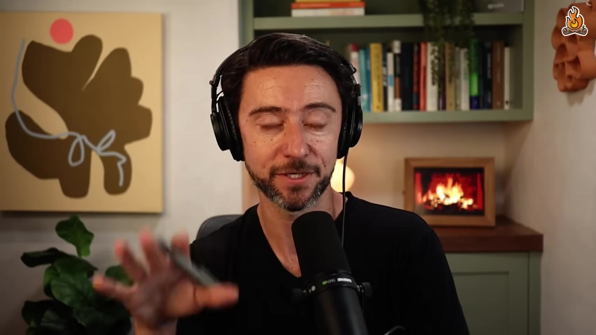
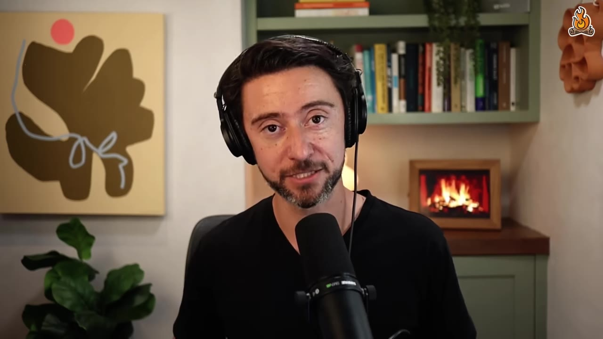
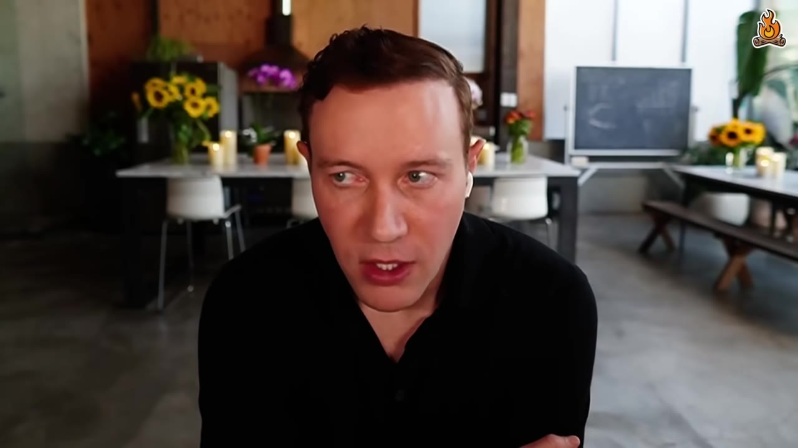

Ethan Smith, CEO of Graphite and SEO veteran of 18 years, breaks down the second-biggest shift in search since Google's Panda update — and gives a tactical playbook for early-stage companies to show up in ChatGPT, Perplexity, and Gemini answers.
Watch on YouTubeLenny welcomes back Ethan Smith, CEO of Graphite and his go-to SEO expert, for a deep dive into what's changed since their last episode 2.5 years ago. Ethan has been in SEO since 2007 — the largest shift then was Google's Panda algorithm killing mass-autogenerated landing pages. This is the second biggest change.

AEO (Answer Engine Optimization) and GEO (Generative Engine Optimization) describe the same thing: how do I show up in LLMs as an answer? Ethan prefers "answer engine" because "generative" is broader (images, video, etc.).
The critical difference from Google: in search, your blue link at #1 wins. In LLMs, the model summarizes many citations — so you win by being mentioned most often across the citation set, not by ranking #1 anywhere.

In order to win something like "what's the best website builder," even if Webflow's URL shows up #1 in the citations, they're not going to win the answer because their URL showed up #1. But in Google, they would win if their blue link showed up first.— Ethan Smith
The head (top queries) and the tail (long-tail queries) are both different in LLMs. The tail is especially larger — people ask follow-ups, conversations happen, and questions exist in LLMs that were never searched before.
In traditional SEO, Ethan's first advice to startups is don't do it — you lack domain authority, it takes years to build, and you should wait until Series A/B. AEO is different.
A new YC company can launch today and show up in an LLM answer tomorrow by getting cited across Reddit, YouTube, blogs, and affiliates. No domain-authority moat.
Webflow, Ethan's client, ran an AEO program with three winning tactics (in order):

Early-stage companies can win. They can win quickly. Anyone can win quickly by getting mentioned as many times as possible by the citations.— Ethan Smith
The traffic from LLMs isn't just volume — it's significantly higher quality. Webflow saw a 6× conversion rate difference between LLM traffic and Google search traffic.
Why? Users arrive after having a multi-turn conversation with follow-ups. They've built up intent, narrowed their options, and are highly qualified when they click through.

Webflow gets 8% of its signups from LLMs — now one of their top acquisition channels.
Ethan breaks AEO into two buckets:
On-site: - Landing pages targeting topics (not keywords) — each page covers hundreds to tens of thousands of questions - Answer every follow-up question — the more you answer, the more likely you show up - Help center optimization — move to subdirectory, cross-link pages, fill the long tail with articles for obscure use cases
Off-site (citation optimization): - YouTube/Vimeo — easy, no community pushback, huge for niche B2B topics - Reddit — the #1 cited source; authenticity is everything - Affiliates (Dotdash Meredith, Korra) — paid mentions are "expensive, easy, controllable" - Tier-1 blogs (Good Housekeeping, etc.)

Reddit's dual role is striking: it's the most-cited source and the spam filter. The community aggressively polices fake accounts and auto-posted comments, which is why LLMs trust it.
The strategy for Reddit is simple: make an account, say who you are, say where you work, and give a useful answer. Even five great comments can be enough. You don't need 10,000.— Ethan Smith
Ethan's team at Graphite ran a rigorous study on AI-generated content across Google and ChatGPT:

The deeper risk: if everyone generates AI content and LLMs summarize it, you get infinite derivatives of derivatives — what researchers call "model collapse." The wisdom of the crowd collapses to a single opinion (like ice cream being "vanilla"). Information gain — saying something no one else has — is the defense.
Most SEO/AEO "best practices" are wrong because nobody verifies them. Ethan's academic-research approach:

In SEO, it's common for something to change and you think it was this thing that caused it, and it's actually not. Reproducibility is very important. Try the study multiple times. If it works 10 times, it probably works.— Ethan Smith
:::